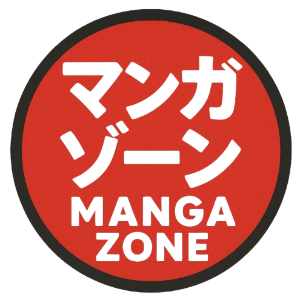
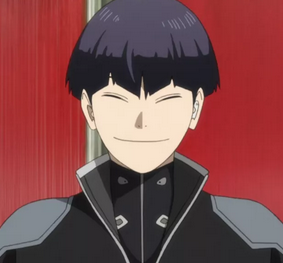
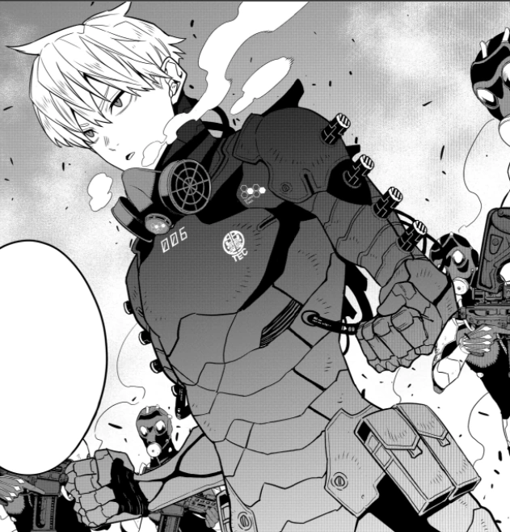
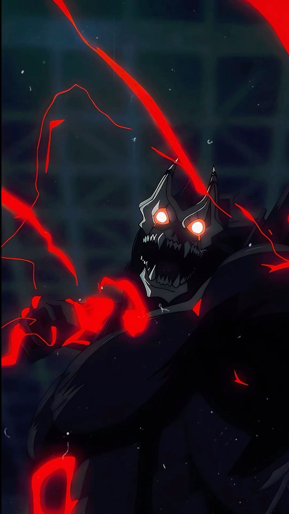

Accueil
L’ascension fulgurante de Kaiju No. 8 continue : avec son dernier arc explosif, le manga s’impose comme l’un des shōnen les plus attendus de 2025.
Kaiju nᵒ 8 est un shōnen manga écrit et dessiné par Naoya Matsumoto

L’ascension fulgurante de Kaiju No. 8 continue : avec son dernier arc explosif, le manga s’impose comme l’un des shōnen les plus attendus de 2025.
Kaiju nᵒ 8 est un shōnen manga écrit et dessiné par Naoya Matsumoto

Kaiju No. 8 suit Kafka Hibino, un employé d'entretien qui rêve de rejoindre les Forces de Défense.

Le héros devenu Kaiju n°8.

Capitaine des Forces de Défense.

Maître du sabre anti-kaiju.

Partenaire loyal de Kafka.

Prodige de la nouvelle génération.

Iharu est un soldat de la troisième division des Forces de Défense.
L’ascension fulgurante de Kaiju No. 8 continue : avec son dernier arc explosif, le manga s’impose comme l’un des shōnen les plus attendus de 2025.


Kaiju n°10 enfin révélé dans le dernier chapitre !

La capitaine dévoile une nouvelle arme anti-kaiju.

Crunchyroll confirme une saison 2 plus sombre.
Découvrez aussi nos choix de la semaine